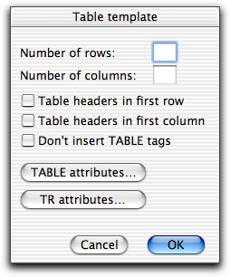

Table utilities
The menu contains some
functions for manipulating tables in addition to menu items for inserting
table related HTML elements. This page describes the more advanced
functions.
Table
Template...
A function to easily build a table if it does
not have too complicated a structure.

You are presented with a dialog box, as shown above, where you can specify:
- the number of rows and columns you want.
- whether you want table headers (TH) in the first row and/or the
first column. The rest will be table cells (TD).
- whether or not you want TABLE tags. Skip the table tags if you
want to insert new rows in an existing table.
- attributes for TABLE.
- attributes for TR. These attributes will be the same for every row.
You cannot use this function to build more complicated tables which
requires attributes such as ROWSPAN and COLSPAN.
As an example, if you choose to create a table template with two rows and
two columns, Alpha would insert
<TABLE>
<TR>
<TD>|</TD>
<TD>•</TD>
</TR>
<TR>
<TD>•</TD>
<TD>•</TD>
</TR>
</TABLE>•
Tabs to Rows...
Takes
a tab-delimited table and makes HTML table rows. To use this function, first select
the text to make table rows of before you choose
Tabs to Rows from the
menu.
When you use this function a dialog box is first opened, as shown
above, where you can specify:
- Whether you want table headers (TH) in the first row and/or the
first column. The rest will be table cells (TD).
- Whether or not you want TABLE tags. Skip the table tags if you
want to insert new rows in an existing table.
- Whether several tabs after each other shall be treated as a single
tab or not. You can put extra tabs between the cell to obtain straight columns
and then check this option to get the HTML table you want.
- Attributes for TABLE.
- Attributes for TR. These attributes will be the same for every row.
Example: If you have the lines
a b c
d e f
in your document, "Tabs to Rows" will transform them into
<TABLE>
<TR>
<TD>a</TD>
<TD>b</TD>
<TD>c</TD>
</TR>
<TR>
<TD>d</TD>
<TD>e</TD>
<TD>f</TD>
</TR>
</TABLE>
Rows to Tabs
Converts table rows in a selection to a tab-delimited format. (This is
"Tabs to Rows" backwards.) To use this, first select the table rows you
want to convert. This function will remove the elements TR, TH and TD, and
put one tab between each table cell. Everything in each table row will be
put on one line. If the table contains cells of varying length you may
have to change the tab size for the table to look pretty. This function
does not remove the surrounding TABLE tags.
Import Table...
Function to import a tab delimited table from a file. This works just like
Tabs to Rows except that the table is read from a
file rather than being selected in the document.
Previous page
Next page